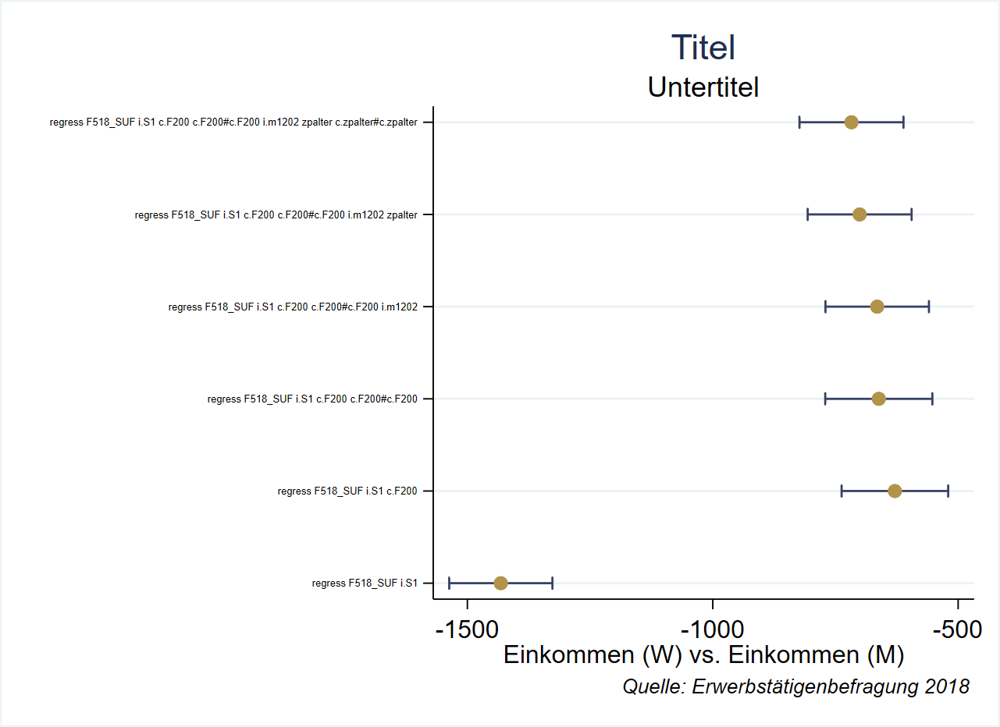

3 Regressionsergebnisse weiterverarbeiten
3.1 e() und r() der Regressionsergebnisse
Die Koeffizienten und Standardfehler des letzten Modells werden in e() gespeichert:
reg F518_SUF F200 Source | SS df MS Number of obs = 14,659
-------------+---------------------------------- F(1, 14657) = 1370.76
Model | 1.3122e+10 1 1.3122e+10 Prob > F = 0.0000
Residual | 1.4031e+11 14,657 9572601.57 R-squared = 0.0855
-------------+---------------------------------- Adj R-squared = 0.0855
Total | 1.5343e+11 14,658 10467142.3 Root MSE = 3094
------------------------------------------------------------------------------
F518_SUF | Coef. Std. Err. t P>|t| [95% Conf. Interval]
-------------+----------------------------------------------------------------
F200 | 109.4473 2.956134 37.02 0.000 103.6529 115.2417
_cons | -344.1221 104.2802 -3.30 0.001 -548.5245 -139.7197
------------------------------------------------------------------------------mat l e(b)e(b)[1,2]
F200 _cons
y1 109.44727 -344.122123.1.1 Koeffizienten mit _b / _se aufrufen
Allerdings gibt es noch eine Abkürzung mit _b[varname] bzw. _se[varname]:
dis "Der Koeffizient für F200 ist " _b[F200]
dis "Der Standardfehler des Koeffizienten für F200 ist " _se[F200]Der Koeffizient für F200 ist 109.44727
Der Standardfehler des Koeffizienten für F200 ist 2.9561335Wir können so auch vorhergesagte Werte berechnen - entweder für spezifische Werte:
dis _b[_cons] + 20 *_b[F200]
margins, at(F200 = 20)1844.8234
Adjusted predictions Number of obs = 14,659
Model VCE : OLS
Expression : Linear prediction, predict()
------------------------------------------------------------------------------
| Delta-method
| Margin Std. Err. t P>|t| [95% Conf. Interval]
-------------+----------------------------------------------------------------
_cons | 1844.823 49.14441 37.54 0.000 1748.494 1941.153
------------------------------------------------------------------------------…oder für alle Beobachtungen:
gen pred_manual = _b[_cons] + F200 *_b[F200]
predict pred_auto, xb
gen diff= pred_manual - pred_auto
su diff Variable | Obs Mean Std. Dev. Min Max
-------------+---------------------------------------------------------
diff | 17,376 0 0 0 03.1.2 Komplette Regressionstabelle
Die vollständige Regressionstabelle ist aber eine r-Class matrix:
reg F518_SUF F200
matlist r(table) r(table)[9,2]
F200 _cons
b 109.44727 -344.12212
se 2.9561335 104.28024
t 37.023793 -3.2999743
pvalue 6.36e-287 .00096924
ll 103.65288 -548.52452
ul 115.24167 -139.71973
df 14657 14657
crit 1.9601259 1.9601259
eform 0 03.2 Regressionstabellen als matrix speichern und anpassen
Mit ' können wir die Regressionstabelle transponieren:
reg F518_SUF F200
mat C = r(table)'
mat l CC[2,9]
b se t pvalue ll ul
F200 109.44727 2.9561335 37.023793 6.36e-287 103.65288 115.24167
_cons -344.12212 104.28024 -3.2999743 .00096924 -548.52452 -139.71973
df crit eform
F200 14657 1.9601259 0
_cons 14657 1.9601259 0rownumb hilft, einen Koeffizienten zu suchen:
mat C1 = C[rownumb(C,"F200"),1...]
mat l C1C1[1,9]
b se t pvalue ll ul
F200 109.44727 2.9561335 37.023793 6.36e-287 103.65288 115.24167
df crit eform
F200 14657 1.9601259 03.3 kategoriale UV
Der Koeffizientenname ist etwas komplizierterer Name bei kat. UVs:
reg F518_SUF i.S1 F200
ereturn list
mat l r(table)
dis "Der Koeffizient für S1 = weiblich ist " _b[2.S1]r(table)[9,4]
1b. 2.
S1 S1 F200 _cons
b 0 -628.91281 95.08006 464.42184
se . 55.392637 3.2038116 125.90363
t . -11.353726 29.67717 3.688709
pvalue . 9.461e-30 5.23e-188 .00022621
ll . -737.48935 88.800186 217.63489
ul . -520.33627 101.35993 711.2088
df 14656 14656 14656 14656
crit 1.9601259 1.9601259 1.9601259 1.9601259
eform 0 0 0 0
Der Koeffizient für S1 = weiblich ist -628.91281Dies müssen wir auch bei der Suche nach einem Koeffizienten berücksichtigen:
mat D = r(table)' // transponieren:
mat D2 = D[rownumb(D,"2.S1"),1...] // nur Koeffizient für S1 = 2
mat l D23.4 Als Datensatz ablegen:
Auch hier können wir dann mit xsvmat die Matrix in einen Datensatz umformatieren:
cap frame drop regres1
xsvmat D2, names(col) rownames(coef) frame(regres1)
frame change regres1
list, noobs clean // keine Info zum Modell... coef b se t pvalue ll ul df crit eform
1b.S1 0 . . . . . 14656 1.960126 0
2.S1 -628.9128 55.39264 -11.35373 9.46e-30 -737.4893 -520.3362 14656 1.960126 0
F200 95.08006 3.203812 29.67717 0 88.80019 101.3599 14656 1.960126 0
_cons 464.4218 125.9036 3.688709 .0002262 217.6349 711.2088 14656 1.960126 0 3.5 weitere Infos aus e()
In ereturn list oben sehen wir, dass e(cmdline) den reg-Befehl enthält:
dis "`e(cmdline)'"regress F518_SUF i.S1 F200Diese Information können wir als global mit in den Ergebnis-frame nehmen. globals bleiben nehmen in der Session erhalten, auch wenn wir zwischen frames wechseln.
3.6 reg-Loop
Um den Nutzen zu demonstrieren, erstellen wir eine Schleife, welche eine Reihe an Regressionsmodellen schätzt und bei jedem Durchlauf einen zusätzlichen Term hinzunimmt. Wir interessieren uns aber nur, dafür wie sich der Koeffizient für das Geschlecht (S1 == 2) entwickelt mit jedem neuen Modell:
local predictors i.S1 c.F200 c.F200#c.F200 i.m1202 zpalter c.zpalter#c.zpalter // UV-Liste
local r = 1 // Zähler
loc uv // uv rücksetzen (zur sicherheit)
foreach v of local predictors {
local uv `uv' `v'
qui regress F518_SUF `uv'
mat D = r(table)' // reg-tabelle transponieren & speichern
mat D2 = D[rownumb(D,"2.S1"),1...] // Koeffizient für S1=2 behalten
if (`r' == 1) mat R = D2 // im ersten Durchlauf R erstellen
if (`r' != 1) mat R = R\D2 // danach: D2 an R anfügen
loc ++r // Zähler + 1
}
mat l RR[6,9]
b se t pvalue ll ul df crit eform
2.S1 -1431.8093 53.630001 -26.697917 8.52e-154 -1536.9298 -1326.6888 16633 1.9601066 0
2.S1 -628.91281 55.392637 -11.353726 9.461e-30 -737.48935 -520.33627 14656 1.9601259 0
2.S1 -661.6656 55.679749 -11.883416 2.034e-32 -770.80492 -552.52628 14655 1.9601259 0
2.S1 -664.94219 53.793012 -12.361126 6.336e-35 -770.38328 -559.50111 14633 1.9601261 0
2.S1 -700.71303 54.028438 -12.969337 2.975e-38 -806.61563 -594.81043 14552 1.960127 0
2.S1 -717.33567 54.061055 -13.268991 5.977e-40 -823.30221 -611.36914 14551 1.960127 0Wie wissen wir jetzt, für was kontrolliert wurde?
Wir nutzen den Zähler, um ein global mit der Zählernummer zu erstellen und eine Zeile in die matrix einzufügen:
local predictors i.S1 c.F200 c.F200#c.F200 i.m1202 zpalter c.zpalter#c.zpalter
local r = 1 // Zähler
loc uv // uv rücksetzen (zur sicherheit)
foreach v of local predictors {
local uv `uv' `v'
qui regress F518_SUF `uv'
mat D = r(table)' // reg-tabelle transponieren & speichern
mat D2 = D[rownumb(D,"2.S1"),1...] // Koeffizient für S1=2 behalten
mat M = `r'
mat colname M = mod
if (`r' == 1) mat R = D2 , M // ,r -> zähler an Koeffizientzeile anfügen
if (`r' != 1) mat R = R\(D2 , M)
glo cmd`r' = "`e(cmdline)'"
loc ++r // Zähler + 1
}
mat l RR[6,10]
b se t pvalue ll ul df crit eform mod
2.S1 -1431.8093 53.630001 -26.697917 8.52e-154 -1536.9298 -1326.6888 16633 1.9601066 0 1
2.S1 -628.91281 55.392637 -11.353726 9.461e-30 -737.48935 -520.33627 14656 1.9601259 0 2
2.S1 -661.6656 55.679749 -11.883416 2.034e-32 -770.80492 -552.52628 14655 1.9601259 0 3
2.S1 -664.94219 53.793012 -12.361126 6.336e-35 -770.38328 -559.50111 14633 1.9601261 0 4
2.S1 -700.71303 54.028438 -12.969337 2.975e-38 -806.61563 -594.81043 14552 1.960127 0 5
2.S1 -717.33567 54.061055 -13.268991 5.977e-40 -823.30221 -611.36914 14551 1.960127 0 6Diese matrix R schicken wir jetzt in einen frame:
cap frame drop rmods
xsvmat R, names(col) rownames(coef) frame(rmods)
frame change rmods
list, noobs cleancoef b se t pvalue ll ul df crit eform mod
2.S1 -1431.809 53.63 -26.69792 0 -1536.93 -1326.689 16633 1.960107 0 1
2.S1 -628.9128 55.39264 -11.35373 9.46e-30 -737.4893 -520.3362 14656 1.960126 0 2
2.S1 -661.6656 55.67975 -11.88342 2.03e-32 -770.8049 -552.5263 14655 1.960126 0 3
2.S1 -664.9422 53.79301 -12.36113 6.34e-35 -770.3833 -559.5011 14633 1.960126 0 4
2.S1 -700.713 54.02844 -12.96934 2.97e-38 -806.6156 -594.8104 14552 1.960127 0 5
2.S1 -717.3357 54.06105 -13.26899 0 -823.3022 -611.3691 14551 1.960127 0 6 Jetzt wissen zwar schon mal, aus welchem Modell der Koeffizient jeweils kommt (basierend auf mod).
Eigentlich würden das aber gerne labeln.
Dazu können wir jetzt auf die globals zurückgreifen - mit all globals können wir nach ihnen suchen:
global allglo: all globals "cmd*"
mac l allglo
allglo: cmd6 cmd5 cmd4 cmd3 cmd2 cmd1mac l cmd1
cmd1: regress F518_SUF i.S1Jetzt können wir mit einer Schleife die Spalte mod labeln.
Mit label define .... können Wertelabels erstellt werden - mit der Option ,modify können wir das auch schrittweise verändern.
Außerdem können wir einen kleinen Trick nutzen, um innerhalb der Schleife auf das global mit einer bestimmten Zahl zuzugreifen:
levelsof mod, loc(mnrs)
foreach m of local mnrs {
lab def mod_lab `m' "${cmd`m'}", modify // value label verändern
}
lab val mod mod_lab
list, noobs clean coef b se t pvalue ll ul df crit eform mod
2.S1 -1431.809 53.63 -26.69792 0 -1536.93 -1326.689 16633 1.960107 0 regress F518_SUF i.S1
2.S1 -628.9128 55.39264 -11.35373 9.46e-30 -737.4893 -520.3362 14656 1.960126 0 regress F518_SUF i.S1 c.F200
2.S1 -661.6656 55.67975 -11.88342 2.03e-32 -770.8049 -552.5263 14655 1.960126 0 regress F518_SUF i.S1 c.F200 c.F200#c.F200
2.S1 -664.9422 53.79301 -12.36113 6.34e-35 -770.3833 -559.5011 14633 1.960126 0 regress F518_SUF i.S1 c.F200 c.F200#c.F200 i.m1202
2.S1 -700.713 54.02844 -12.96934 2.97e-38 -806.6156 -594.8104 14552 1.960127 0 regress F518_SUF i.S1 c.F200 c.F200#c.F200 i.m1202 zpalter
2.S1 -717.3357 54.06105 -13.26899 0 -823.3022 -611.3691 14551 1.960127 0 regress F518_SUF i.S1 c.F200 c.F200#c.F200 i.m1202 zpalter c.zpalter#c.zpalter Daraus können wir beispielsweise einen Koeffizientenplot erstellen:
graph twoway ///
(rcap ll ul mod,horizontal lcolor("57 65 101") ) /// Konfidenzintervalle
(scatter mod b, mcolor("177 147 74") ) , /// Punktschätzer
graphregion(fcolor(white)) /// Hintergundfarbe (außerhalb des eigentlichen Plots)
ylabel(, valuelabel angle(0) labsize(tiny)) ///
legend(off) ///
xtitle("Einkommen (W) vs. Einkommen (M)") /// Achsentitel
ytitle("") ///
title("Titel") ///
subtitle("Untertitel") ///
caption("{it:Quelle: Erwerbstätigenbefragung 2018}", size(8pt) position(5) ring(5) )
Diese labels sind alles andere ideal. Im nächsten Kapitel werden wir einige Möglichkeiten kennenlernen, da etwas zu ändern.
3.7 Übungen
- save the coefficients in a separate data set
- graph the educ and union coefficients against year
3.8 Anhang
3.8.1 statsby
statsby _b _se, by(Bula) noisily: ///
regress F518_SUF c.F200##c.F200 i.m1202 i.S13.8.2 weitere matrix-Befehle
Wir können auch Rechnungen einfügen:
matrix X1 = (1+1, 2*3/4 \ 5/2, 3)
mat l X1 X1[2,2]
c1 c2
r1 2 1.5
r2 2.5 33.8.2.1 Teilmatrizen
mat X1 = (1,2,3,4,5 \ 6,7,8,9,10 \ 0,-1,-2,-3,-5 \ -6,-7,-8,-9,-10)
mat l X1X1[4,5]
c1 c2 c3 c4 c5
r1 1 2 3 4 5
r2 6 7 8 9 10
r3 0 -1 -2 -3 -5
r4 -6 -7 -8 -9 -10Wir können aus diesen Matrizen auch Teilbereiche auswählen:
matrix newmat = oldmat[Zeile(nbereich), Spalte(nbereich)]Zeilenbereich und Spaltenbereich können einzelne Zahlen oder Bereiche mit durch zwei Punkte getrennten Start- und Endpositionen sein.
Matrix B erstellen, welche die Zeile 2-4 und die Spalte 1-5 von X1 enthält:
matrix B = X1[2..4,1..5]
mat l B
mat l X1B[3,5]
c1 c2 c3 c4 c5
r2 6 7 8 9 10
r3 0 -1 -2 -3 -5
r4 -6 -7 -8 -9 -10
X1[4,5]
c1 c2 c3 c4 c5
r1 1 2 3 4 5
r2 6 7 8 9 10
r3 0 -1 -2 -3 -5
r4 -6 -7 -8 -9 -10Um alle Zeilen nach der zweiten Zeile zu übernehmen, verwenden wir drei Punkte:
matrix C = X1[2...,1..5]
mat l C
mat l X1C[3,5]
c1 c2 c3 c4 c5
r2 6 7 8 9 10
r3 0 -1 -2 -3 -5
r4 -6 -7 -8 -9 -10
X1[4,5]
c1 c2 c3 c4 c5
r1 1 2 3 4 5
r2 6 7 8 9 10
r3 0 -1 -2 -3 -5
r4 -6 -7 -8 -9 -103.8.2.2 Spalten/Zeilen auswählen
B1 enthält Spalte 1 und 3 aus X1:
mat B1 = X1[1...,1],X1[1...,3]
mat l B1
mat l X1B1[4,2]
c1 c3
r1 1 3
r2 6 8
r3 0 -2
r4 -6 -8
X1[4,5]
c1 c2 c3 c4 c5
r1 1 2 3 4 5
r2 6 7 8 9 10
r3 0 -1 -2 -3 -5
r4 -6 -7 -8 -9 -10B2 enthält Zeile 1 und 3 aus X1:
mat B2 = X1[1,1...] \ X1[4,1...]
mat l B2
mat l X1B2[2,5]
c1 c2 c3 c4 c5
r1 1 2 3 4 5
r4 -6 -7 -8 -9 -10
X1[4,5]
c1 c2 c3 c4 c5
r1 1 2 3 4 5
r2 6 7 8 9 10
r3 0 -1 -2 -3 -5
r4 -6 -7 -8 -9 -103.8.2.3 Namensbasierte Auswahl
Hier helfen rownumb und colnumb
mat X1 = (1,2,3 \ 8,9,10 )
mat colname X1 = var1 var2 var3
mat rowname X1 = set1 set2
mat X2 = X1[rownumb(X1,"set1"),1...]
mat l X2X2[1,3]
var1 var2 var3
set1 1 2 3mat X3 = X1[1...,colnumb(X1,"var2")]
mat l X3X3[2,1]
var2
set1 2
set2 9